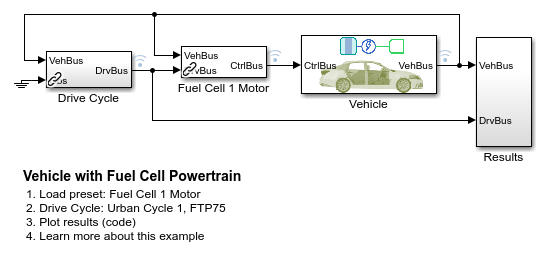
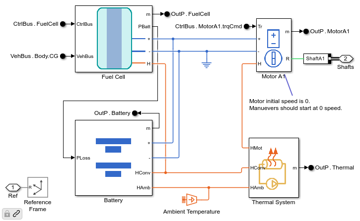
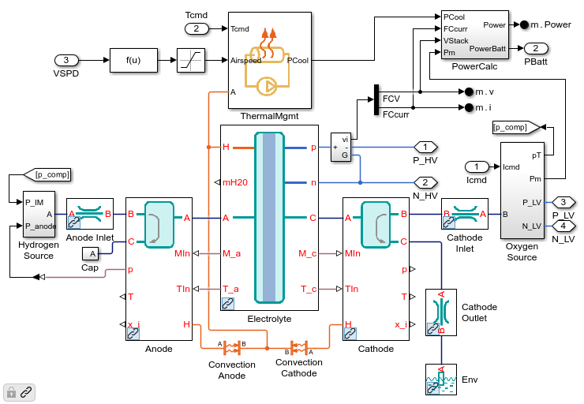
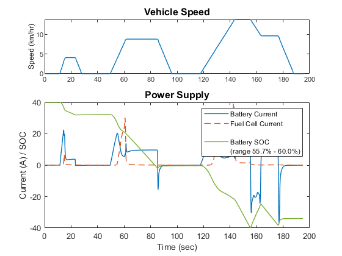

Vehicle with Fuel Cell Powertrain
This example shows a fuel cell powertrain modeled in Simscape. A single fuel cell stack in parallel with a battery powers a single motor that propels the vehicle. The fuel cell is modeled using a custom domain to track the different species of gas that are used in the fuel cell. The vehicle can be tested on custom drive cycles or using the Drive Cycle Source from Powertrain Blockset.
Contents
Model
Powertrain Subsystem
The fuel cell and battery are connected on a DC electrical network to the motor. The control system determines how much power to draw from the battery and fuel cell. During braking events, power is fed back into the battery to recharge it. A thermal system modeled using a fluid network controls the temperature of the battery, DC-DC converters, and the motor.
Fuel Cell Subsystem
The flow of oxygen, hydrogen, nitrogen, and water is captured in a custom Simscape domain. Equations for reactions and heat generated are implemented in Simscape language. A thermal management system keeps the fuel cell at the optimal operating temperature.
Simulation Results from Simscape Logging: Cycle 1
Plot shows how the current from the battery and fuel cell vary as the car is driven along a standard drive cycle. Note that the battery is recharged (current changes sign) while the fuel cell is only discharged.
